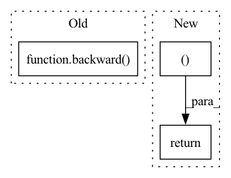

Pattern ID :34881

Before Change
db = torch.zeros((heads, src_seq, tgt_seq), device = device, dtype = dtype) if attn_bias.requires_grad else torch.zeros((heads, 0, 0), device = device, dtype = dtype)
do_scaled = torch.zeros_like(l)
backward(do, o, l, q, k, v, dq, dk, dv, db, do_scaled, mask, attn_bias, scale, causal, q_block_size, k_block_size)
db = db if attn_bias.requires_grad else None
return dq, dk, dv, None, db, None, None, None, None
After Change
db = db if attn_bias.requires_grad else None
return dq, dk, dv, None, db, None, None, None, None, None, None
// wrapper function
def flash_cosine_sim_attention(
In pattern: SUPERPATTERN
Frequency: 3
Non-data size: 3
Instances
Fragment ID: 99952929
Project Name: lucidrains/flash-cosine-sim-attention
Commit Name: 1dec3cb2ccf7f31f8c28a130899d3885cd3abcc7
Time: 2022-09-04
Author: lucidrains@gmail.com
File Name: flash_cosine_sim_attention/flash_cosine_sim_attention.py
M Class Name: FlashCosineSimAttention
N Class Name: FlashCosineSimAttention
M Method Name: backward(2)
N Method Name: backward(2)
M Parent Class: Function
N Parent Class: Function
M File Name: flash_cosine_sim_attention/flash_cosine_sim_attention.py
N File Name: flash_cosine_sim_attention/flash_cosine_sim_attention.py
M Start Line: 110
M End Line: 124
N Start Line: 114
N End Line: 130
'>
Before Change
@staticmethod
def backward(ctx, do):
o, l, q, k, v = ctx.saved_tensors
dq, dk, dv = backward(do, o, l, q, k, v)
return dq, dk, dv
// wrapper function
After Change
scale = ctx.scale
dq, dk, dv = backward(do, o, l, q, k, v, scale)
return dq, dk, dv, None
// wrapper function
def flash_cosine_sim_attention(q, k, v, scale = 8):
'>
Fragment ID: 99952928
Project Name: lucidrains/flash-cosine-sim-attention
Commit Name: ad07af6f17255ebe36d46a7d1053e0c03b5a6aea
Time: 2022-08-13
Author: lucidrains@gmail.com
File Name: flash_cosine_sim_attention/flash_cosine_sim_attention.py
M Class Name: FlashCosineSimAttention
N Class Name: FlashCosineSimAttention
M Method Name: backward(2)
N Method Name: backward(2)
M Parent Class: Function
N Parent Class: Function
M File Name: flash_cosine_sim_attention/flash_cosine_sim_attention.py
N File Name: flash_cosine_sim_attention/flash_cosine_sim_attention.py
M Start Line: 32
M End Line: 33
N Start Line: 35
N End Line: 38
'>
Before Change
db = torch.zeros((heads, src_seq, tgt_seq), device = device, dtype = dtype) if attn_bias.requires_grad else torch.zeros((heads, 0, 0), device = device, dtype = dtype)
do_scaled = torch.zeros_like(l)
backward(do, o, l, q, k, v, dq, dk, dv, db, do_scaled, mask, attn_bias, scale, causal, q_block_size, k_block_size, backward_tile_size)
db = db if attn_bias.requires_grad else None
return dq, dk, dv, None, db, None, None, None, None, None, None
After Change
db = db if attn_bias.requires_grad else None
return dq, dk, dv, None, db, None, None, None, None, None, None, None, None, None, None
// wrapper function
def flash_cosine_sim_attention(
'>
Fragment ID: 99952930
Project Name: lucidrains/flash-cosine-sim-attention
Commit Name: 4eee865e17a85bb19074dc4f9f9be84d113f0f07
Time: 2022-09-07
Author: lucidrains@gmail.com
File Name: flash_cosine_sim_attention/flash_cosine_sim_attention.py
M Class Name: FlashCosineSimAttention
N Class Name: FlashCosineSimAttention
M Method Name: backward(2)
N Method Name: backward(2)
M Parent Class: Function
N Parent Class: Function
M File Name: flash_cosine_sim_attention/flash_cosine_sim_attention.py
N File Name: flash_cosine_sim_attention/flash_cosine_sim_attention.py
M Start Line: 114
M End Line: 130
N Start Line: 140
N End Line: 170